快速步入hadoop世界
任务
1.了解HADOOP产生背景及HADOOP生态圈 2.体会HADOOP和大数据、云计算等概念之间的关系 3.了解HADOOP的相关应用案例 4.了解分布式系统的概念
目标
首次接触大数据框架，总体是让学生建立起大数据和分布式的感性认识和宏观概念 1、理解hadoop是什么，它的应用场景什么，大体上怎么用 2、通过一个案例的演示说明，理解数据挖掘系统的基本流程和结构
第一节：HADOOP背景介绍
1.1 什么是HADOOP
Apache Hadoop 为可靠的，可扩展的分布式计算开发开源软件。 Apache Hadoop软件库是一个框架，它允许使用简单的编程模型跨计算机群集分布式处理大型数据集（海量的数据）。 包括这些模块：
- Hadoop Common：支持其他Hadoop模块的常用工具。
- Hadoop分布式文件系统（HDFS™）：一种分布式文件系统，可提供对应用程序数据的高吞吐量访问。
- Hadoop YARN：作业调度和集群资源管理的框架。
- Hadoop MapReduce：一种用于并行处理大型数据集的基于YARN的系统。
上述每个模块有自己独立的功能，而模块之间又有相互的关联。
广义上来说，HADOOP通常是指一个更广泛的概念——HADOOP生态圈

1.2 HADOOP产生背景
雏形开始于2002年的Apache的Nutch，Nutch是一个开源Java 实现的搜索引擎。它提供了我们运行自己的搜索引擎所需的全部工具。包括全文搜索和Web爬虫。Nutch的设计目标是构建一个大型的全网搜索引擎，包括网页抓取、索引、查询等功能，但随着抓取网页数量的增加，遇到了严重的可扩展性问题--------“如何解决数十亿网页的存储和索引问题”。
- 2003年Google发表了一篇技术学术论文谷歌文件系统（GFS）。GFS也就是google File System，google公司为了存储海量搜索数据而设计的专用文件系统。
- 2004年Nutch创始人Doug Cutting基于Google的GFS论文实现了分布式文件存储系统名为NDFS。
- 2004年Google又发表了一篇技术学术论文MapReduce。MapReduce是一种编程模型，用于大规模数据集（大于1TB）的并行分析运算。
- 2005年Doug Cutting又基于MapReduce，在Nutch搜索引擎实现了该功能。
1.3 HADOOP在大数据、云计算中的位置和关系
云计算是分布式计算、并行计算、网格计算、多核计算、网络存储、虚拟化、负载均衡等传统计算机技术和互联网技术融合发展的产物。借助IaaS(基础设施即服务)、PaaS(平台即服务)、SaaS（软件即服务）等业务模式，把强大的计算能力提供给终端用户。
现阶段，云计算的两大底层支撑技术为“虚拟化”和“大数据技术”
而HADOOP则是云计算的PaaS层的解决方案之一，并不等同于PaaS，更不等同于云计算本身。
1.4 国内外HADOOP应用案例介绍
- 大型网站Web服务器的日志分析：一个大型网站的Web服务器集群，每5分钟收录的点击日志高达800GB左右，峰值点击每秒达到900万次。每隔5分钟将数据装载到内存中，高速计算网站的热点URL，并将这些信息反馈给前端缓存服务器，以提高缓存命中率。

运营商流量经营分析：每天的流量数据在2TB~5TB左右，拷贝到HDFS上，通过交互式分析引擎框架，能运行几百个复杂的数据清洗和报表业务，总时间比类似硬件配置的小型机集群和DB2快2~3倍。

- 城市交通卡口视频监控信息的实时分析：采用基于流式 Stream进行全省范围的交通卡口通过视频监控收录的信息进行实时分析、告警和统计（计算实时路况），对全省范围内未年检车辆或套牌车的分析延时在300毫秒左右，可以做出实时告警，所以开车的朋友最好要按时年检。
1.5 国内HADOOP的就业情况分析
大数据方面的就业主要有三大方向：
- 数据分析类大数据人才 对应岗位 大数据系统研发工程师
- 系统研发类大数据人才 对应岗位 大数据应用开发工程师
- 应用开发类大数据人才 对应岗位 大数据分析师
1.6 HADOOP生态圈以及各组成部分的简介
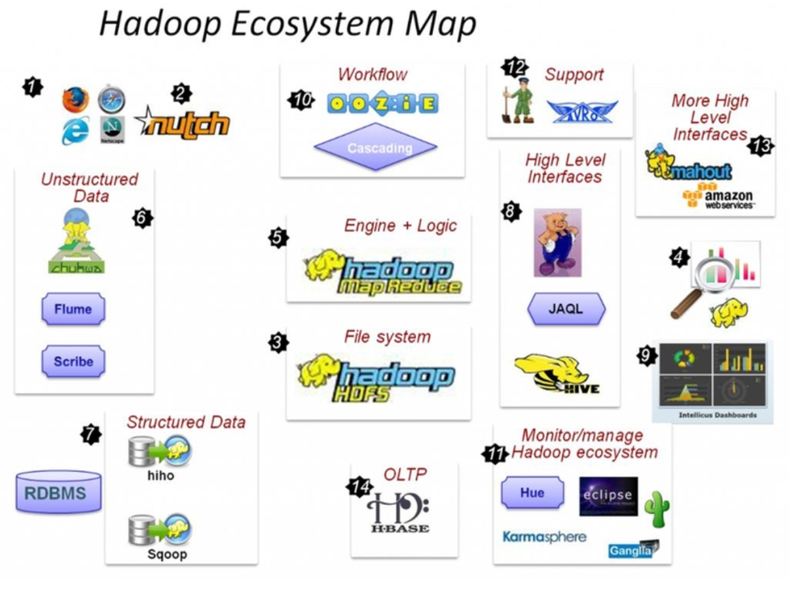
重点组件：
- HDFS：分布式文件系统
- MAPREDUCE：分布式运算程序开发框架
- HIVE：基于大数据技术（文件系统+运算框架）的SQL数据仓库工具
- HBASE：基于HADOOP的分布式海量数据库
- ZOOKEEPER：分布式协调服务基础组件
- Mahout：基于mapreduce/spark/flink等分布式运算框架的机器学习算法库
- Oozie：工作流调度框架
- Sqoop：数据导入导出工具
- Flume：日志数据采集框架
第二节：分布式系统概述
2.1 分布式软件系统
分布式系统是由一组通过网络进行通信、为了完成共同的任务而协调工作的计算机节点组成的系统。分布式系统的出现是为了用廉价的、普通的机器完成单个计算机无法完成的计算、存储任务。其目的是利用更多的机器，处理更多的数据。
2.2 常用分布式软件系统举例
Web服务器集群 单台服务器的性能和资源都是有限的，支持的连接并发数都有上限，因此必须采用多服务器集群的方法才能提高连接并发数。连接并发数的容量计算也很容易：
连接并发数= 服务器1并发数+服务器2并发数+……+ 服务器n并发数
当然，我们不能都给每台web服务器分配一个域名地址访问，肯定是同一个域名同一个入口，例如百度后面有成百上千台web服务器，但是我们都是使用 www.baidu.com 一个入口，至于这个入口会自动给我们分配一台web服务器访问，我们不会在意这台web服务器的具体地址是多少，这就是负载均衡器的作用。

第三节：离线数据分析流程介绍
一个应用广泛的数据分析系统：“web日志数据挖掘”
3.1 需求分析
案例名称
网站点击流日志数据挖掘系统
一般中型的网站(10W的PV以上)，每天会产生1G以上Web日志文件。大型或超大型的网站，可能每小时就会产生10G的数据量。具体来说，比如某电子商务网站，在线团购业务。每日PV数100w，独立IP数5w。用户通常在工作日上午10:00-12:00和下午15:00-18:00访问量最大。日间主要是通过PC端浏览器访问，休息日及夜间通过移动设备访问较多。网站搜索浏量占整个网站的80%，PC用户不足1%的用户会消费，移动用户有5%会消费。对于日志的这种规模的数据，用HADOOP进行日志分析，是最适合不过的了。
需求描述
“Web点击流日志”包含着网站运营很重要的信息，通过日志分析，我们可以知道网站的访问量，哪个网页访问人数最多，哪个网页最有价值，广告转化率、访客的来源信息，访客的终端信息等。
数据来源
本案例的数据主要由用户的点击行为记录
获取方式：在页面预埋一段js程序，为页面上想要监听的标签绑定事件，只要用户点击或移动到标签，即可触发ajax请求到后台servlet程序，用log4j记录下事件信息，从而在web服务器（nginx、tomcat等）上形成不断增长的日志文件。
数据效果： 58.215.204.118 - - [18/Sep/2013:06:51:35 +0000] "GET /wp-includes/js/jquery/jquery.js?ver=1.10.2 HTTP/1.1" 304 0 "http://blog.fens.me/nodejs-socketio-chat/" "Mozilla/5.0 (Windows NT 5.1; rv:23.0) Gecko/20100101 Firefox/23.0"
3.2 数据处理流程
流程图解析
本案例跟典型的BI系统极其类似，整体流程如下：
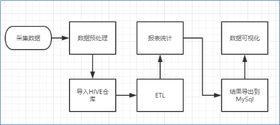
1) 数据采集：定制开发采集程序，或使用开源框架FLUME
2) 数据预处理：定制开发mapreduce程序运行于hadoop集群
3) 数据仓库技术：基于hadoop之上的Hive
4) 数据导出：基于hadoop的sqoop数据导入导出工具
5) 数据可视化：定制开发web程序或使用kettle等产品
6) 整个过程的流程调度：hadoop生态圈中的oozie工具或其他类似开源产品
项目架构
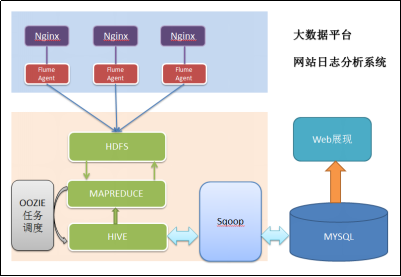
项目相关截图
Mapreduce程序运行效果

hive运行效果
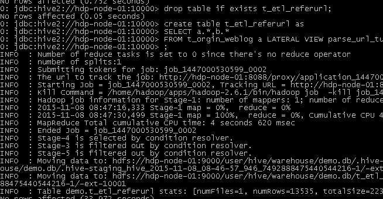
将最终数据导入到mysql中
语句 ./sqoop export --connect jdbc:mysql://localhost:3306/weblogdb --username root --password root --table t_display_xx --export-dir /user/hive/warehouse/uv/dt=2014-08-03
3.3 项目最终效果
经过完整的数据处理流程后，会周期性输出各类统计指标的报表，在生产实践中，最终需要将这些报表数据以可视化的形式展现出来，本案例采用web程序来实现数据可视化
效果如下所示：
第四节：集群环境搭建
4.1 HADOOP集群规划
| 主机名（hostname） | 安装软件 | 运行进程 |
|---|---|---|
| min1 | hadoop-2.7.1 | nameNode、resourceManager |
| min2 | hadoop-2.7.1 | dataNode、nodeManager |
| min3 | hadoop-2.7.1 | dataNode、nodeManager |
4.2 HADOOP集群安装步骤
准备三台Centos6.7 64bit虚拟机，虚拟机名分别为：
Centos6.7_min1
Centos6.7_min2
Centos6.7_min3
注意 三台机器使用root用户登陆系统
分别修改虚拟机的主机名（hostname）
在Centos6.7_min1机器中执行修改hostname命令
xxxxxxxxxxvi etc/sysconfig/network #编辑network文件
在Centos6.7_min2机器中执行修改hostname命令
xxxxxxxxxxvi etc/sysconfig/network #编辑network文件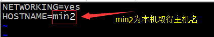
在Centos6.7_min3机器中执行修改hostname命令
xxxxxxxxxxvi etc/sysconfig/network #编辑network文件
分别重启机器
分别配置三台机器的静态ip
规划三台机器的静态ip地址
Centos6.7_min1 192.168.18.64 Centos6.7_min2 192.168.18.65 Centos6.7_min3 192.168.18.66 以centos6.7_min1为例配置静态ip地址，其他机器配置步骤一致
xxxxxxxxxxvi /etc/sysconfig/network-scripts/ifcfg-eth0 #编辑ifcfg-eth0文件
分别重启机器
分别修改三台机器hosts
xxxxxxxxxxvim /etc/hosts #在每台机器的hosts文件添加ip与hostname的映射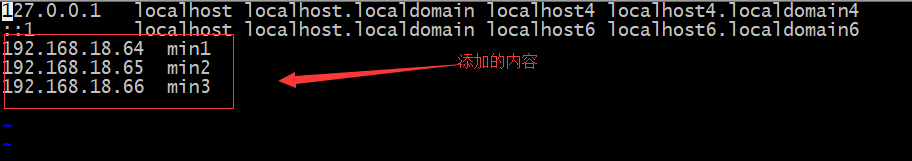
分别为每台机器创建一个名为“hadoop”的用户
xxxxxxxxxxuseradd hadoop #添加hadoop用户passwd hadoop #给hadoop用户 设置密码分别为每台机器的“hadoop”用户配置sudo权限
xxxxxxxxxxvi /etc/sudoers #用root用户编辑sudoers文件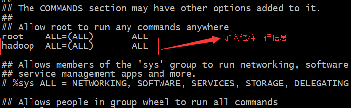
关闭每台机器的防火墙
xxxxxxxxxxservice iptables stop #关闭防火墙chkconfig iptables off #关闭防火墙开机启动
安装 jdk-7u55-linux-i586.tar.gz （详细步骤在学习linux基础时就讲到，此处略）
三台机器分别切换为hadoop用户并创建一个名为apps的文件夹
xxxxxxxxxxsu - hadoop #切换到hadoop用户mkdir apps #在hadoop的家目录下创建一个apps文件下面的步骤都是以hadoop用户来完成
上传hadoop-2.7.1.tar.gz到Centos6.7_min1机器的/home/hadoop/app目录下
解压hadoop-2.7.1.tar.gz安装包
xxxxxxxxxxcd /home/hadoop/app #切换到/home/hadoop/app目录tar -zxvf hadoop-2.7.1.tar.gz -C /home/hadoop/apps #解压设置hadoop-env.sh配置文件
xxxxxxxxxxcd /home/hadoop/apps/hadoop-2.7.1/etc/hadoop #切换目录vi hadoop-env.sh #添加如下内容
设置core-site.xml配置文件
xxxxxxxxxxmkdir /home/hadoop/apps/hadoop-2.7.1/tmp #创建一个名为tmp的文件夹vi core-site.xml #添加如下内容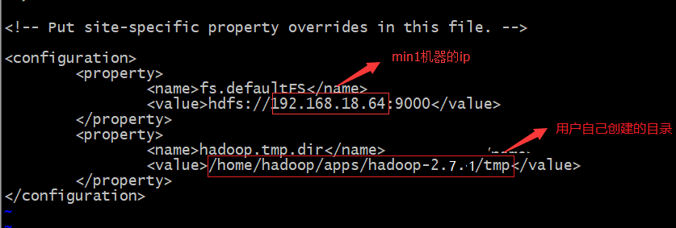
设置hdfs-site.xml配置文件（该文件默认即可，今天就不用配置此文件了）
设置mapred-site.xml配置文件
xxxxxxxxxxmv mapred-site.xml.template mapred-site.xml #默认mapred-site.xml不存在，使用#mapred-site.xml.template生成vi mapred-site.xml #添加如下内容
设置yarn-site.xml配置文件
xxxxxxxxxxvi yarn-site.xml #添加如下内容
设置slaves配置文件
xxxxxxxxxxvi slaves #添加如下内容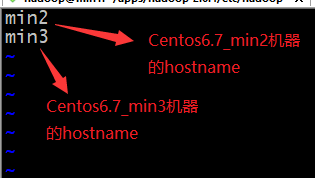
配置Centos6.7min1到Centos6.7min2、Centos6.7_min3的免密登陆
在Centos6.7_min1中生成密钥对
xxxxxxxxxxcd ~ #切换到/home/hadoop目录ssh-keygen -t rsa #此命令要接收用户输入，直接输入“三次回车”即可
将公钥分别拷贝到要min2和min3机器中
xxxxxxxxxxcd .ssh #切换到 .ssh目录ssh-copy-id min2ssh-copy-id min3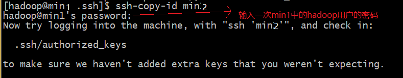
将apps目录下的所有文件分别拷贝到Centos6.7min2、Centos6.7min3
xxxxxxxxxxcd ~/apps #切换到/home/hadoop/apps目录下Scp -r /home/hadoop/apps min2:/home/hadoop/Scp -r /home/hadoop/apps min3:/home/hadoop分别在三台机器上将hadoop添加到环境变量
xxxxxxxxxx（1）vim /etc/proflie（2）source /etc/profile（3）分别重启三台机器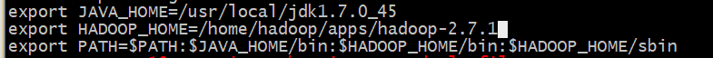
4.3 小案例演示
启动集群
格式化HDFS 因为HDFS也是文件系统，第一次使用一个文件系统都要格式化
xxxxxxxxxxhadoop namenode -format #在min1机器上执行格式化命令
启动hdfs集群
xxxxxxxxxxstart-dfs.sh #在min1机器上执行启动hdfs集群命令在min1启动namenode成功显示:

在min2和min3启动datanode成功显示：

启动yarn集群
xxxxxxxxxxstart-yarn.sh #在min1机器上执行启动yarn集群命令在min1启动resourcemanager成功显示:
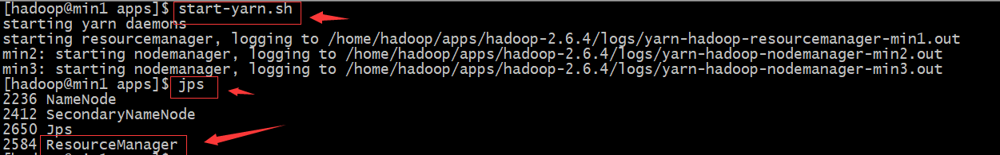
在min2和min3启动nodemanager成功显示：

hdfs简单操作演示
浏览hdfs服务器上的文件列表
xxxxxxxxxxhadoop fs -ls / #在三台机器中任何机器上执行此操作都可以 显示hdfs的根目录下的所有文件由于第一次执行查询根目录下文件内容，所以为空
在hdfs服务器上创建一个文件夹
xxxxxxxxxxhadoop fs -mkdir -p /wordcount/input #在三台机器中任何机器上执行此操作都可以#在根目录下创建一个名为input的文件夹上传本地文件到hdfs服务器上
xxxxxxxxxxhadoop fs -put /home/hadoop/wordcount_content.txt /wordcount/input#在三台机器中任何机器上执行此操作都可以#将本地的/home/hadoop/test.txt文件上传到hdfs的/input目录下
系统自带mapreduce案例演示
启动系统自带的名为“wordcount”的mapreduce程序
xxxxxxxxxxhadoop jar $HADOOP_HOME/share/hadoop/mapreduce/hadoop-mapreduce-examples-2.7.1.jar wordcount /wordcount/input /wordcount/output #执行一个mapreduce例子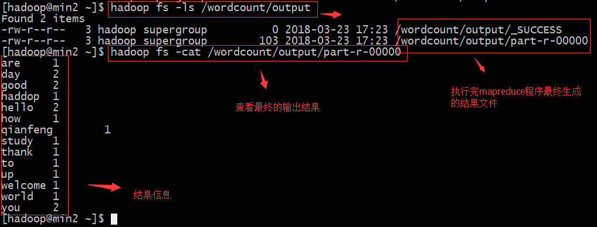
第五节：集群使用效果演示
5.1 HDFS的基本使用
- 查看集群状态
打开web控制台查看HDFS集群信息，在浏览器打开[http://192.168.18.64:50070/]

使用命令查看：hdfs dfsadmin -report
使用shell命令操作hdfs
从HDFS下载文件
xxxxxxxxxxhadoop fs -get /wordcount/input/wordcount_content.txt #下载wordcount_content.txt到本地当前路径
使用java api操作hdfs
xxxxxxxxxxpublic void testUpload() throws Exception {Configuration conf = new Configuration();// conf.set("fs.defaultFS", "hdfs://192.168.18.64:9000");//第二个参数 表示要访问的hadoop hdfs服务器的uri//拿到一个文件系统操作的客户端实例对象/*fs = FileSystem.get(conf);*///可以直接传入 uri和用户身份FileSystem fs = FileSystem.get(new URI("hdfs://192.168.18.110:9000"),conf,"hadoop"); //最后一个参数为用户名Thread.sleep(2000);fs.copyFromLocalFile(new Path("d:/cc.txt"), new Path("/access.log.copy"));fs.close();}
5.2 MAPREDUCE基本使用
上面演示mapreduce的demo是hadoop提供的，下面演示一个使用代码编写一个wordcount的例子
需求
从大量（比如T级别）文本文件中，统计出每一个单词出现的总次数
思路
Map阶段：
- 从HDFS的源数据文件中逐行读取数据
- 将每一行数据切分出单词
- 为每一个单词构造一个键值对(单词，1)
- 将键值对发送给reduce
Reduce阶段：
- 接收map阶段输出的单词键值对
- 将相同单词的键值对汇聚成一组
- 对每一组，遍历组中的所有“值”，累加求和，即得到每一个单词的总次数
- 将(单词，总次数)输出到HDFS的文件中
代码实现
编写mapper类
x/*** Maper里面的泛型的四个类型从左到右依次是：** KEYIN: 默认情况下，是mr框架所读到的一行文本的起始偏移量，Long, 类似于行号* 但是在hadoop中有自己的更精简的序列化接口，所以不直接用Long，而用LongWritable* VALUEIN:默认情况下，是mr框架所读到的一行文本的内容，String，同上，用Text** KEYOUT：是用户自定义逻辑处理完成之后输出数据中的key，在此处是单词，String，同上，用Text* VALUEOUT：是用户自定义逻辑处理完成之后输出数据中的value，在此处是单词次数，Integer，同上，用IntWritable*/public class WordcountMapper extends Mapper<LongWritable, Text, Text, IntWritable>{/*** map阶段的业务逻辑就写在自定义的map()方法中* maptask会对每一行输入数据调用一次我们自定义的map()方法*/protected void map(LongWritable key, Text value, Context context) throws IOException, InterruptedException {//将maptask传给我们的文本内容先转换成StringString line = value.toString();//根据空格将这一行切分成单词String[] words = line.split(" ");//将单词输出为<单词，1>/*** 如<age,1> <age,1> <apple,1> <book,1> <book,1> <book,1> <but,1> <break,1>* <create,1> <decied,1> <eder,1> <heart,1> <index,1> <jeep,1>** context.write(new Text(word), new IntWritable(1));方法将上述结果输出几个文件中* 为什么有几个文件呢？因为 上述结果可以进行一下分类 比如* key以a到c开头的放入 1.txt文件中* key以d-i放入2.txt中* key以j 放入3.txt中** 然后reudce程序在 根据不同的文件进行统计 最终形成一个输出结果文件。**/for(String word:words){//将单词作为key，将次数1作为value，以便于后续的数据分发，可以根据单词分发，以便于相同单词会到相同的reduce taskcontext.write(new Text(word), new IntWritable(1));}}}
编写reducer类
xxxxxxxxxx/*** Reducer里面的泛型的四个类型从左到右依次是：* KEYIN,* VALUEIN 对应 mapper输出的KEYOUT,VALUEOUT类型对应** KEYOUT, 是单词* VALUEOUT 是自定义reduce逻辑处理结果的输出数据类型，是总次数*/public class WordcountReducer extends Reducer<Text, IntWritable, Text, IntWritable>{/*** <world,1>* <world,1>* <world,1>** <hello,1>* <hello,1>* <hello,1>** <banana,1>* <banana,1>* <banana,1>* <banana,1>* 入参key，是一组相同单词kv对的key* values是若干相同key的value集合* 如 <banana,[1,1,1,1]>*/protected void reduce(Text key, Iterable<IntWritable> values, Context context) throws IOException, InterruptedException {int count=0;/*Iterator<IntWritable> iterator = values.iterator();while(iterator.hasNext()){count += iterator.next().get();}*/for(IntWritable value:values){count += value.get();}context.write(key, new IntWritable(count));}}
编写主类，来描述job并提交job
xxxxxxxxxx/*** 相当于一个yarn集群的客户端* 需要在此封装我们的mr程序的相关运行参数，指定jar包* 最后提交给yarn*/public class WordcountDriver {/*** 该类是运行在hadoop客户端的，main一运行，yarn客户端就启动起来了，与yarn服务器端通信* yarn服务器端负责启动mapreduce程序并使用WordcountMapper和WordcountReducer类*/public static void main(String[] args) throws Exception {if (args == null || args.length == 0) {//此代码需要两个输入参数 第一个参数支持要处理的源文件；第二个参数是处理结果的输出路径args = new String[2];args[0] = "hdfs://master:9000/wordcount/input/";//路径都是 hdfs系统的文件路径args[1] = "hdfs://master:9000/wordcount/output";}/*** 什么也不设置时，如果在安装了hadoop的机器上运行时，自动读取* /home/hadoop/app/hadoop-2.4.1/etc/hadoop/core-site.xml* 文件放入Configuration中*/Configuration conf = new Configuration();//设置的没有用! ??????// conf.set("HADOOP_USER_NAME", "hadoop");// conf.set("dfs.permissions.enabled", "false");/*conf.set("mapreduce.framework.name", "yarn");conf.set("yarn.resoucemanager.hostname", "mini1");*/Job job = Job.getInstance(conf);/*job.setJar("/home/hadoop/wc.jar");*///指定本程序的jar包所在的本地路径job.setJarByClass(WordcountDriver.class);//指定本业务job要使用的mapper/Reducer业务类job.setMapperClass(WordcountMapper.class);job.setReducerClass(WordcountReducer.class);//指定mapper输出数据的kv类型job.setMapOutputKeyClass(Text.class);job.setMapOutputValueClass(IntWritable.class);//指定最终输出的数据的kv类型job.setOutputKeyClass(Text.class);job.setOutputValueClass(IntWritable.class);//指定job的输入原始文件所在目录FileInputFormat.setInputPaths(job, new Path(args[0]));//指定job的输出结果所在目录FileOutputFormat.setOutputPath(job, new Path(args[1]));//将job中配置的相关参数，以及job所用的java类所在的jar包，提交给yarn去运行/*job.submit();*/boolean res = job.waitForCompletion(true);System.exit(res?0:1);}}
程序打包
第一步

第二步

第三步
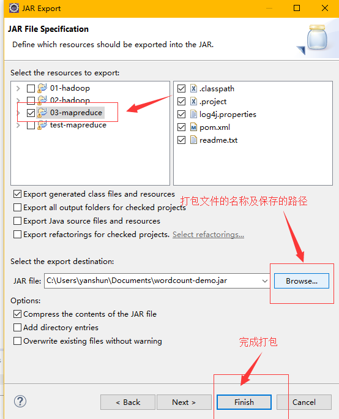
准备测试数据
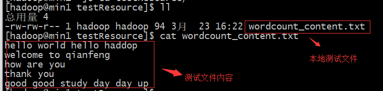
将wordcount_content.txt文件上传到hdfs
xxxxxxxxxxhadoop fs mkdir -p /wordcount/input #在hdfs上创建输入数据文件夹hadoop fs –put /wordcount_content.txt /wordcount/input #wordcount_content.txt上传到hdfs上将程序jar包上传到集群的任意一台服务器上
使用命令执行wordcount程序
xxxxxxxxxxhadoop jar wordcount.jar com.1000phone.wcdemo.WordcountDriver /wordcount/input /wordcount/output查看处理结果